ARTÍCULOS
No se encontraron artículos
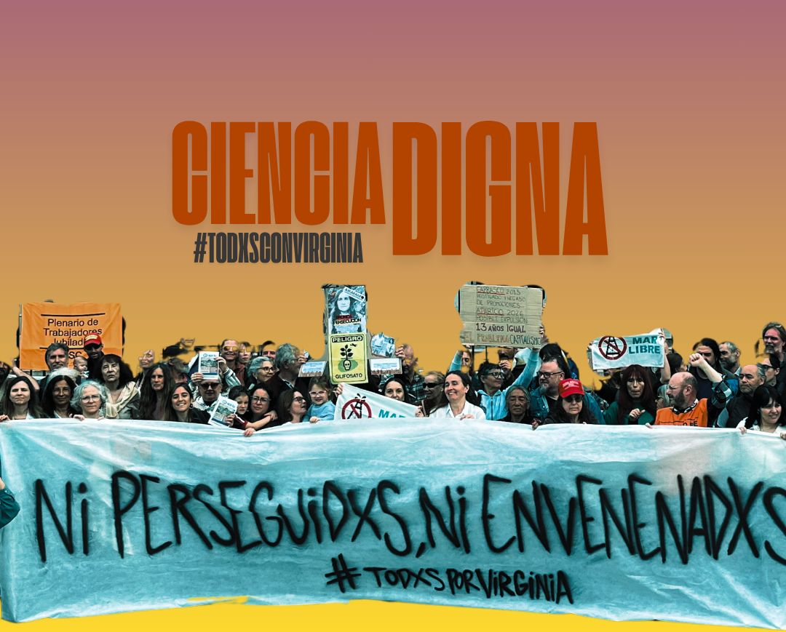
EDITORIAL
No fue la “Inteligencia Artificial” la que exoneró a Virginia Aparicio
Desde hace meses escuchamos por cadena nacional e internacional las
advertencias de los directivos de las principales empresas tecnológicas sobre las posibles pérdidas de
puestos de trabajo que podría generar la "Inteligencia Artificial". Horas y horas de contenido
multimedial para narrar los cambios en el mundo laboral a partir de esta tecnología. Sin embargo, y aún no
habiendo llegado a la singularidad, podemos ser testigos de la gran crisis mundial que pone el mundo a
arder. Las calles de todo el mundo se inundan de reclamos contra el ajuste sobre el pueblo trabajador. Es
por ello que en este número de la Gaceta nos proponemos poner en debate la premisa "La IA nos va a dejar
sin trabajo". A nuestra compañera no la evaluó un algoritmo, la exoneró un Consejo Directivo
capturado por los intereses del agronegocio.
¡No a la exoneración de Virginia Aparicio!
¡Basta de persecución en Ciencia y Técnica!
¡No a la exoneración de Virginia Aparicio!
¡Basta de persecución en Ciencia y Técnica!
ARTÍCULO
Ciencia digna y datos abiertos para decidir
La información se ha convertido en un recurso estratégico del capitalismo contemporáneo. En este
artículo la autora analiza cómo el extractivismo, la invisibilización del trabajo de curación y la
concentración de la infraestructura digital sostienen la desigualdad entre quienes producen los datos y
quienes se apropian de su valor. Frente a un capitalismo que convierte la información en
mercancía, la apuesta es construir datos abiertos para decidir colectivamente y ciencia digna para
empoderar.
ARTÍCULO
TransferencIA: un saber sin espacio para el sujeto, un modelo de lenguaje sin palabras, la inteligencia que no escucha
Matias Aldo Di Matteo, licenciado en Psicología de la UBA, analiza el uso de los chatbots
de Inteligencia Artificial como consejeros terapéuticos. Los modelos de lenguaje no responden al
malestar subjetivo: están programados para estimular la interacción y acrecentar el banco de datos de la
empresa. El artículo recorre el fenómeno de la "Psicosis IA" y reivindica la importancia del
lazo y la escucha humana frente al hechizo fetichista de la tecnología.
NOTA
Sesgos en tecnología
La idea de que las nuevas tecnologías son imparciales parece provenir de la confianza general que tenemos
en las mismas. Pero no debemos confundir precisión con objetividad. Todas las tecnologías
contienen los sesgos de quienes las diseñan, las implementan y las revisan, y ahora, con estos modelos
estadísticos, de quienes las entrenan. En este artículo de Nicky analiza la problemática, para
abrir al debate en torno a lo que sí está en nuestras manos.
RESEÑA
Monopolios del mundo: una lectura de Teoría de la dependencia digital
El texto de Cecilia Rikap desmonta los argumentos del proyecto de Milei para convertir al país en
un polo de inteligencia artificial y propone el concepto de "monopolios intelectuales" para leer la
continuidad del capitalismo monopolista en tiempos de tecnologías digitales. Una invitación
sobre los sujetos sociales que pueden impulsar una transformación radical que frene el avance de Los
monopolios del mundo.

NOTA
Impactos ambientales de los centros de datos que alimentan la Inteligencia Artificial
El desarrollo exponencial de la IA multiplica los mega data centers, cuyo enorme consumo eléctrico e
hídrico, la generación de residuos electrónicos y la contaminación por PFAS impactan gravemente sobre los
bienes comunes y las comunidades cercanas. Ante las protestas y regulaciones en los países
desarrollados, las empresas trasladan estas instalaciones a países periféricos con escasa normativa,
donde los impactos se suman a los de otras industrias extractivas, haciendo urgente la organización de
las comunidades y los trabajadores para planificar la economía en función de las necesidades
humanas.
ARTÍCULO
La "IA" no existe
Nos reconocemos ante una incesante campaña de (anti)marketing escatológico, lanzada desde las propias
empresas de "IA", una prédica infantilizante en la que sus portavoces al mismo tiempo advierten sus
propias negligencias pero rechazan cualquier tipo de responsabilidad. ¿Por qué aún desde una perspectiva
crítica, terminamos replicando los mensajes apocalípticos o tecnooptimistas que nos proponen? ¿Por
qué no podemos abandonar el supuesto de que no hay más alternativa que usar la "IA"? ¿Por qué
no conseguimos discutir su significado, su existencia o su materialidad? Para entender y
plantarnos ante la "IA", necesitamos reconocer las lógicas a las que responde.
EDITORIAL
Más que nunca encontrarnos
El editorial de esta edición analiza el uso analiza la necesidad de volvernos a
encontrar en las calles, en las asambleas y talleres. Poner en palabras los futuros que aún nos quedan por
construir, un futuro donde ninguna científica sea perseguida, donde nuestras pibas puedan proyectarse sin
miedo. Vamos a Córdoba para hacer oír nuestras voces, fortalecer nuestras luchas y construir una
salida desde abajo, independiente de los gobiernos y de quienes pretenden que paguemos la
crisis que ellos mismos generan. Porque si el capital y el poder político nos quieren aisladas y
agotadas, nosotras respondemos encontrándonos, organizándonos y luchando juntas.
¡No a la exoneración de Virginia Aparicio!
¡Basta de persecución a las trabajadoras!
¡No a la exoneración de Virginia Aparicio!
¡Basta de persecución a las trabajadoras!
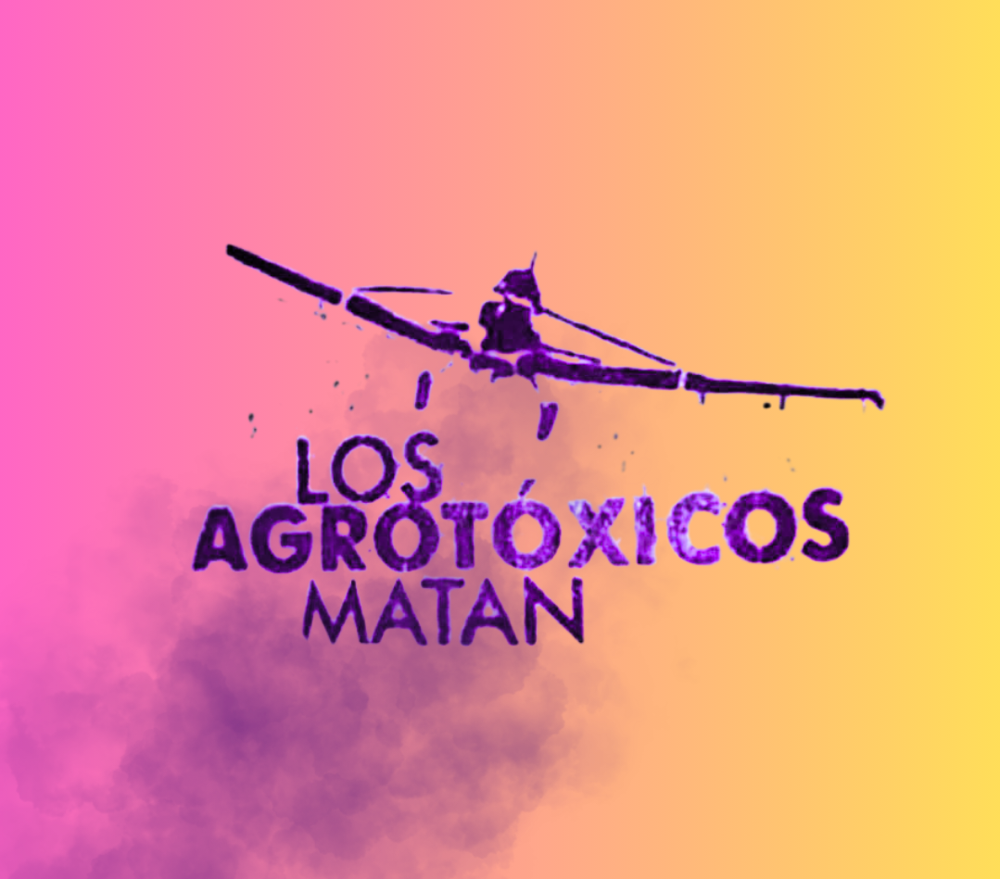
ARTÍCULO
Cuando medir se vuelve incómodo: SPRINT, bioética y el deber de defender una ciencia digna
Nair fue voluntaria del proyecto internacional SPRINT, financiado por la Unión Europea
para estudiar la exposición a plaguicidas desde una perspectiva de Una Salud, entendiendo que la salud
humana, animal y ambiental son dimensiones inseparables de un mismo problema. Ella fue una de los
73 voluntarios Argentinos, con presencia de múltiples pesticidas en sangre. Hoy frente a la persecución
de la Dra. Virginia Aparicio, Nair nos invita a pensar la importancia de construir una ciencia
digna.
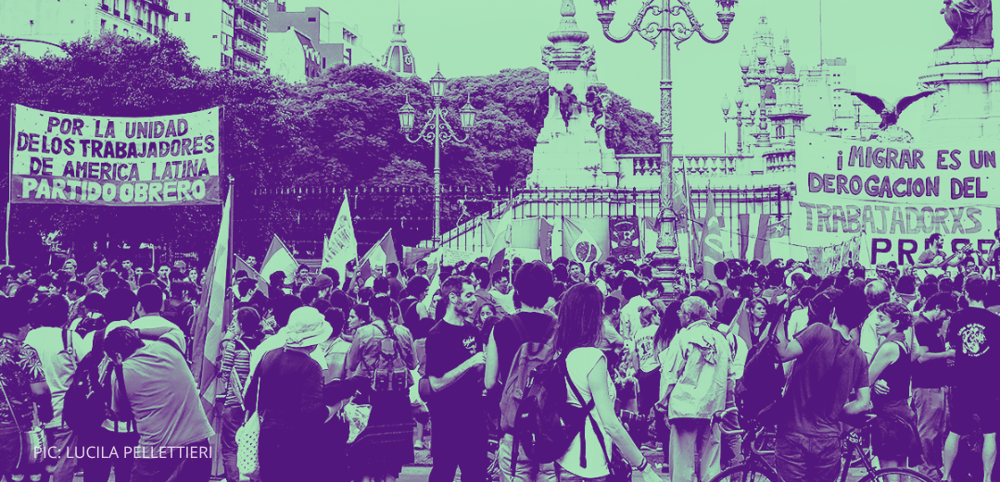
ARTÍCULO
El anarcocapitalismo contra las mujeres migrantes: sus derechos en jaque
Marta Guerreño Lopez y Ana Paula Penchaszadeh analizan cómo el DNU 366 de mayo de 2025 firmado por Javier
Milei desmanteló el derecho universal a la salud que garantizaba la Ley de Migraciones 25.871. A
partir de un diálogo de más de una década, las autoras repasan las restricciones provinciales previas y
muestran cómo la combinación de barreras nacionales y provinciales golpea con especial crudeza a las
mujeres migrantes, que enfrentan mayores tasas de informalidad, peores salarios y sobrecarga de
cuidados.
ARTÍCULO
Mujeres al poder: ¿qué mujeres y para qué?
Ariadna Gallo, investigadora del CONICET en el IEALC, analiza la representación femenina en el Congreso
argentino con una mirada de clase, poniendo el foco en la disputa por el aborto legal. El artículo nos
propone pensar el perfil de las mujeres que llegan a las bancas. Este perfil homogéneo que persiste
incluso después de la Ley de Paridad de 2017, evidenciando que la puerta se abrió pero no para todas.
A partir del recorrido parlamentario de la IVE, la autora plantea que la representación
descriptiva no garantiza la representación sustantiva, y que la representación sustantiva tampoco
alcanza por sí sola para una agenda emancipatoria.
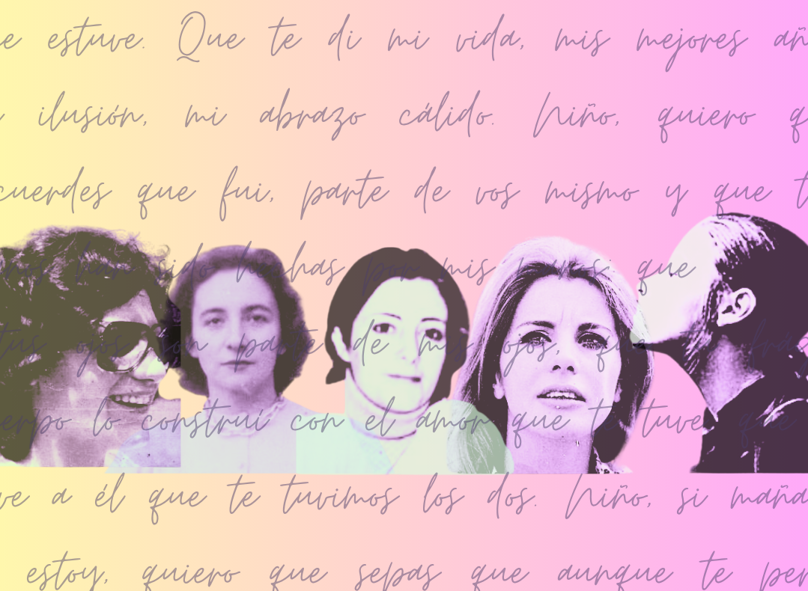
ENTREVISTA
Escritoras en la Argentina de los años 70: investigar un pasado que aún interpela
Entrevista de Silvana Rodriguez Oro a la investigadora Agustina Catalano
para la Gaceta Clara Zetkin, una de las 400 becarias postdoctorales despedidos por el CONICET en julio de
este año. Durante su beca, radicada en la Universidad Nacional de Mar del Plata, investigó las
escrituras y producciones artísticas de mujeres que fueron secuestradas y desaparecidas por la última
dictadura militar en nuestro país. Esta investigación postdoctoral se publicará en los próximos
meses por la editorial Tren En Movimiento, con el título Las armas cotidianas. Escritoras argentinas entre
revoluciones y dictaduras.
RESEÑA
De la mala magia al aquelarre
En cada poesía y en cada cuento, Patricia Toni nos trae las voces de cada hija que duele, y retoma la
palabra como hacemos en cada ronda, en cada asamblea. Patricia es una escritora independiente y activista
social y cultural que nos permite reconocernos en diferentes personajes cotidianos del conurbano
bonaerense y en las situaciones y dilemas que los mismos atraviesan. Este hermoso libro nos recuerda
heridas que no cierran, pero también nos recuerda que sólo articulando nuestra voz seremos escuchadas.
Porque sabemos que unidas podemos ahuyentar la mala magia, prender la hoguera y quemar el dolor.
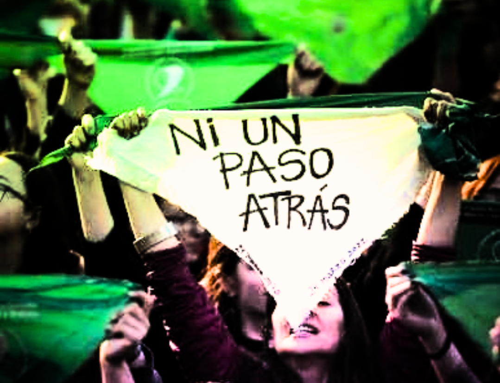
NOTA
ABORTO LEGAL, SEGURO Y GRATUITO: más de 30 años de lucha
El artículo recorre más de tres décadas de lucha por el aborto legal en Argentina, desde la penalización
de 1886 hasta la sanción de la Ley 27.610 en 2020. Repasa los debates internos del movimiento feminista,
la conformación de la Campaña Nacional en 2005, el fallo FAL de 2012, el caso Belén y el protocolo ILE de
2015.
El texto destaca la irrupción de la Marea Verde en 2018, que tras la media sanción en Diputados y el
rechazo en Senado impulsó la despenalización social del aborto. Finalmente, la presión popular
logró la sanción de la ley en diciembre de 2020, una victoria histórica contra el clero y el Estado
capitalista.
EDITORIAL
Agrotóxicos: la banalidad del mal y el rol de la ciencia argentina
El editorial de esta edición analiza el uso indiscriminado de agrotóxicos en el
modelo agroindustrial argentino como una expresión de lo que Hannah Arendt denominó "banalidad del mal",
la normalización burocrática de prácticas dañinas que, despojadas de reflexión ética, se vuelven
rutinarias e incuestionables. La ciencia debe asumir una dimensión política explícita, investigando con
rigor pero también con conciencia de sus efectos, y ponerse del lado de las comunidades que sufren el
veneno, porque la pregunta de fondo no es técnica sino ética: quién decide, con qué criterios y en
beneficio de quién.
ARTÍCULO
Colonización, educación y resistencia: el boicot académico como herramienta contra el genocidio en Palestina
La Comisión por el Boicot Académico a Israel denuncia la complicidad de las universidades israelíes en el
genocidio y escolasticidio en Palestina, y revela que al menos catorce universidades argentinas mantienen
convenios vigentes con esas instituciones. Una lectura necesaria para entender el rol de la academia en el
apartheid y sumarse a la resistencia global.
ENTREVISTA
Resistencia de la comunidad Diaguita Kallchakí de Las Pailas
Alejandra Pastor (Surfrider Argentina) entrevistó a Liz de la Comunidad Indígena
Diaguita Kallchakí "Las Pailas" para la Gaceta Clara Zetkin. Las Pailas es una comunidad
integrada por unas 40 familias, tras los episodios del 12 de junio de 2026 en el paraje San Gabriel y el
violento operativo de desalojo. Una lucha por la defensa de tierras ancestrales, donde viven desde hace
generaciones, incluso antes de la conformación del Estado argentino.
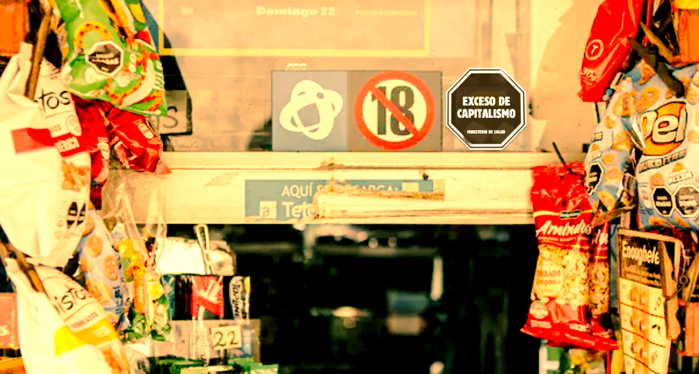
ARTÍCULO
¿Quién decide qué comemos?
La historia de la regulación alimentaria Argentina demuestra que siempre sirvió al capital, no a la salud.
Con los decretos de Milei y Sturzenegger (2025-2026) se disuelven la CONAL y el INAL, se elimina la
Consulta Pública y se centraliza todo en el SENASA bajo ministerio de Economía. El capitalismo
"mata por la boca", no solo a través del hambre, sino también mediante la exposición de la
clase trabajadora a alimentos adulterados, contaminados o de calidad dudosa, en nombre de la "libertad de
mercado". Cuando los controles se subordinan a lógicas comerciales, la pregunta sobre quién
decide qué comemos se vuelve urgente y central, porque la respuesta define si priorizamos la vida o el
mercado.
ARTÍCULO
Hacer(se) con otros
La construcción de lo común no requiere acuerdos previos ni identidades homogéneas, sino que se instituye
a través de la actividad compartida. La comunicación de la ciencia debe pensarse como una práctica
cultural que construye comunidades alrededor del conocimiento. La soberanía cognitiva, entendida como la
capacidad de una sociedad para producir y apropiarse colectivamente de su conocimiento, es
condición necesaria para que una democracia pueda discutir su propio futuro y no quedar reducida a la
lógica del mercado.
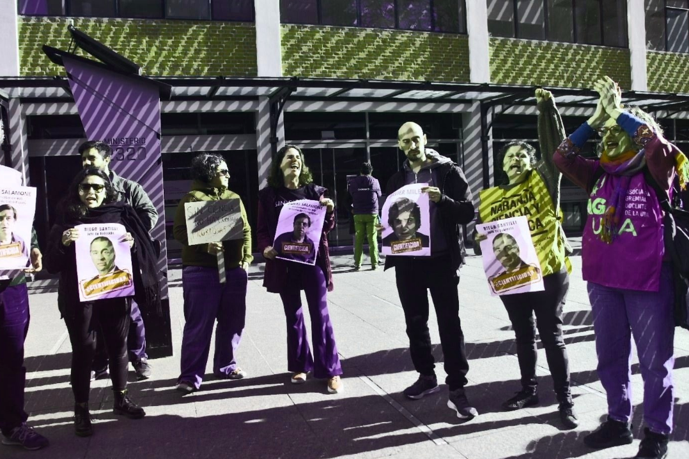
NOTA
Carta abierta de una becaria del CONICET al Presidente
Yo no soy lo que este gobierno quiere hacer de mí. Me rehúso a aceptar imperturbable el ostracismo al que
pretende arrojarme. Hoy, viernes 31 de Agosto, es mi último día como Becaria Posdoctoral del CONICET. Esta
noche, cuando el reloj marque las 00, seré una desempleada más, otro nombre que se suma a la interminable
lista de personas que día tras día se quedan en la calle en este glorioso país.
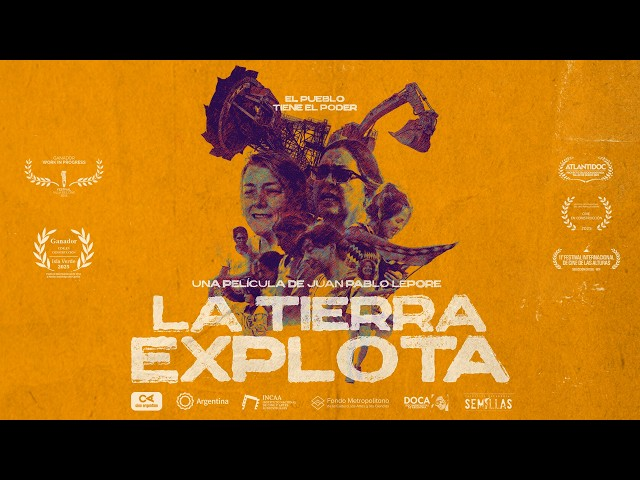
RESEÑA
La Tierra Explota: construir el futuro sobre las cenizas del saqueo
Ni el agua ni la tierra se negocian. El documental de Juan Pablo Lepore sigue a Jenny Luján, Mariela
Leiva, Miriam Samudio y Guni Cañas, cuatro mujeres que lideran la resistencia comunitaria frente al
extractivismo en Argentina. Entre la denuncia del saqueo y la potencia del cuidado colectivo, la película
se inscribe en la tradición del cine militante y nos recuerda que luchar juntas es la única forma de
habitar un presente digno.
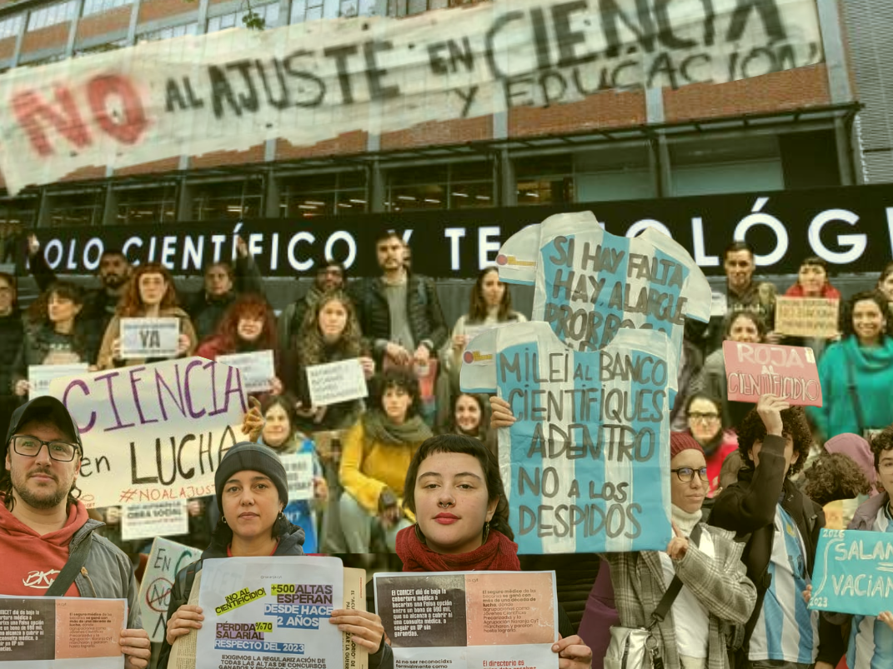
EDITORIAL
Es el desmantelamiento de la ciencia Argentina, un llamamiento a lucha y la organización
Hay momentos en la historia en los que las palabras importan.
Importan porque nombran correctamente la magnitud de los acontecimientos y permiten comprender qué está
verdaderamente en juego. El conflicto que atraviesa hoy el sistema científico y tecnológico argentino no
puede describirse como un "ajuste", un "recorte presupuestario" o una "reestructuración administrativa".
Esas expresiones suavizan una realidad mucho más profunda y dura. Lo que el gobierno de Javier
Milei lleva adelante es un plan sistemático de desmantelamiento del sistema científico
nacional.
Hoy 29 de Julio, el equipo editorial de Gaceta Clara Zetkin, está de huelga. Decidimos posponer el editorial, para llevar la revista a la calle en defensa de la Ciencia Argentina.
¡En CONICET no sobra nadie!¡Abajo el ajuste en Cienica y Tecnología!
Hoy 29 de Julio, el equipo editorial de Gaceta Clara Zetkin, está de huelga. Decidimos posponer el editorial, para llevar la revista a la calle en defensa de la Ciencia Argentina.
¡En CONICET no sobra nadie!¡Abajo el ajuste en Cienica y Tecnología!
ARTÍCULO
LA FOTOGRAFÍA 51: Retratos de la invisibilización de ayer y de hoy
En 1952, Rosalind Franklin capturó la imagen que descifraría el secreto de la vida. Pero su nombre quedó
fuera de la historia. La Fotografía 51 es hoy el símbolo del avance de la ciencia y la persistencia de un
sistema que sigue relegando a las mujeres al pie de página de sus propios descubrimientos.
NOTA
La tierra que supimos conseguir
Quién es el dueño de Argentina? La histórica pregunta volvió a ocupar el centro de la escena a partir del
proyecto de Ley de Inviolabilidad de la Propiedad Privada impulsado por el gobierno actual de Javier
Milei. Presentada como una "herramienta destinada a fortalecer la seguridad jurídica y estimular las
inversiones", la iniciativa viene a reabrir una discusión mucho más profunda que la mera protección del
derecho de propiedad.
ARTÍCULO
¿La muerte como horizonte? Cartografiando un porvenir posible
Las lógicas del mercado dejan a los pueblos cada vez más pobres, a los ricos cada vez más cínicos. En este
terreno sombrío, la cultura nos presta sus narrativas apocalípticas que sostienen el discurso hegemónico:
no hay futuro, al menos para quien no pueda pagarlo. Pero si, como dice Berardi, lo único que sucede es
que ya no somos capaces de imaginarlo, la tarea clínica hoy es estrictamente imaginativa y colectiva. A
las guardias de los hospitales llegan las explosiones de los padeceres, pero hay otra cara del asunto.
El horizonte no está cerrado; está en disputa.
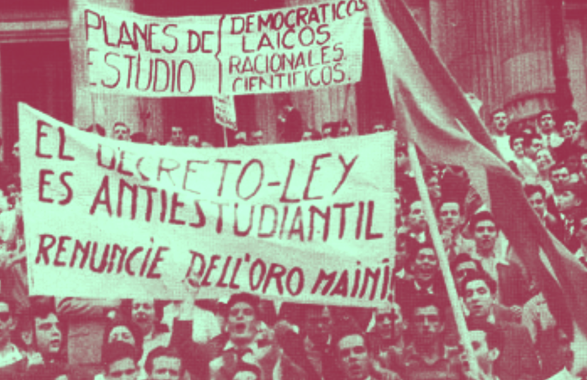
ARTÍCULO
Iglesia Católica y Educación: de la Ley 1420 a la Ley de Educación Nacional
Una de las cuestiones centrales que recorrió la conformación del sistema educativo argentino ha sido el
lugar de la religión en la educación. Pese a que la Iglesia católica ha confrontado con distintos
gobiernos en esta materia y a la extendida idea de que en nuestro país la educación pública es laica, un
breve repaso respecto a las principales normativas que atañen a los niveles de escolaridad obligatoria
muestra el sostenimiento estatal sistemático al sector privado, confesional en gran medida.
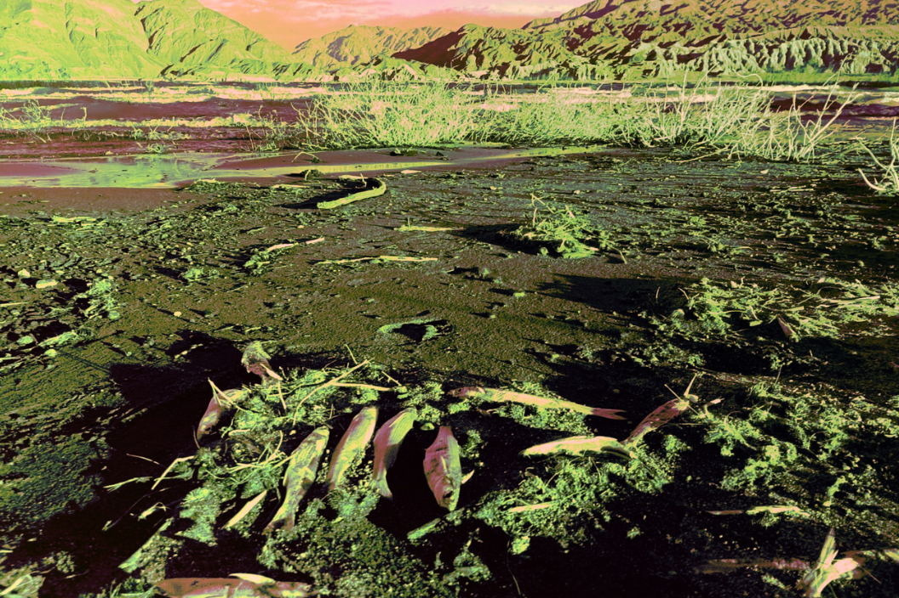
ENTREVISTA
Zona de sacrificio
Desde la Gaceta Clara Zetkin dialogamos con Saúl Zeballos, referente de la
Asamblea Jáchal No Se Toca, que nos da detalles sobre un nuevo estudio sobre la
contaminación producida por la mina Veladero. Repasamos las recientes leyes RIGI y Súper RIGI, que buscan
ampliar un proyecto minero que ya ha convertido a Jáchal en una "zona de sacrificio".
RESEÑA
Sweet Tooth: los espejismos del pasado y otros mundos posibles
¿Se acuerdan cuando pensamos que la pandemia nos iba a hacer mejores? En 2020, creíamos que del
confinamiento saldríamos de esta crisis más solidarios, más conscientes, menos individualistas. La
naturaleza se regeneraba, los cielos se despejaban y por un instante pareció que el capitalismo frenaba su
marcha. Pero lo que vino después fue exactamente lo contrario. Sweet Tooth nos habla de ese mismo
espejismo. Esta bella historia nos propone la organización y la comunidad, aprender a vivir con nuestras
heridas, a cuidarnos mutuamente desde nuestras miradas parciales y finitas.
EDITORIAL
¿Democracia para quién?
El editorial de esta edición analiza la conferencia de Angela Davis en el
seminario "¿Democracia en colapso?", donde la filósofa cuestiona los cimientos excluyentes de
la democracia liberal. En su disertación Davis nos invita a pensar como la prisión no es una anomalía,
sino la "prueba negativa" de una libertad concedida solo a unos pocos, y que el encarcelamiento masivo
revela la continuidad del pasado esclavista. Frente a ello, propone el abolicionismo penal como una
reconceptualización de la democracia misma. Su enfoque interseccional entrelaza racismo, capitalismo y
patriarcado, y su llamado final es a construir una justicia que no sea sinónimo de castigo, sino
una conquista colectiva.
RESEÑA
Atención por alienación: La economía política de las tecnologías de la información
Una lectura del libro de Aarushi Bhandari (2025) Attention and alienation. La tesis de
Bhandari afirma que la economía de la Web 2.0 crea las condiciones para un intercambio desigual: las
corporaciones de plataformas capturan atención y devuelven alienación. Un análisis sobre
economía política de la atención que también es una autobiografía: desde su etapa como entusiasta
ciberoptimista en 2002 hasta una crítica radical sin perder las esperanzas de transformación.
ENTREVISTA
LOS CRUCES: un holobionte audiovisual
Desde la Gaceta Clara Zetkin dialogamos con Julián Galay, cineasta y director del
documental Los Cruces. Una película donde los humanos, arañas, pájaros, monos, motores,
abejas y vibraciones conviven y se producen mutuamente. No hay sujeto filmador puro ni objeto pasivo,
todos son partes de un mismo nicho simbiótico. La película ofrece una investigación sensible sobre sueños,
animales y ciudad, donde cruces entre especies tejen una narrativa que combina lo científico y lo
artístico de manera única.
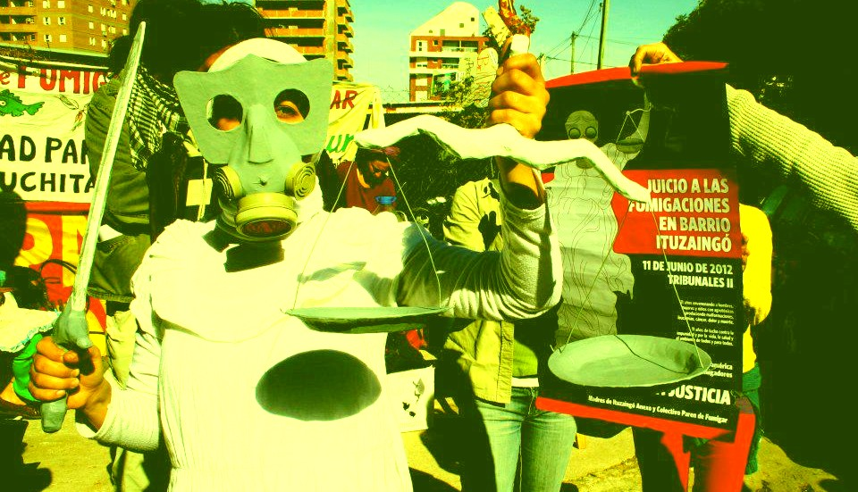
NOTA
Pararse en la dignidad: las madres de Ituzaingó Anexo
Mujeres sin formación académica ni militante, vecinas de un olvidado barrio cordobés, movidas por un
pujante dolor en común, salieron a enfrentar el modelo del agro-negocio. La historia de las
Madres de Ituzaingó Anexo y su vínculo con el legado del embriólogo Andrés Carrasco, quien comprobó la
toxicidad del glifosato y marcó un hito en la ciencia comprometida con los pueblos.
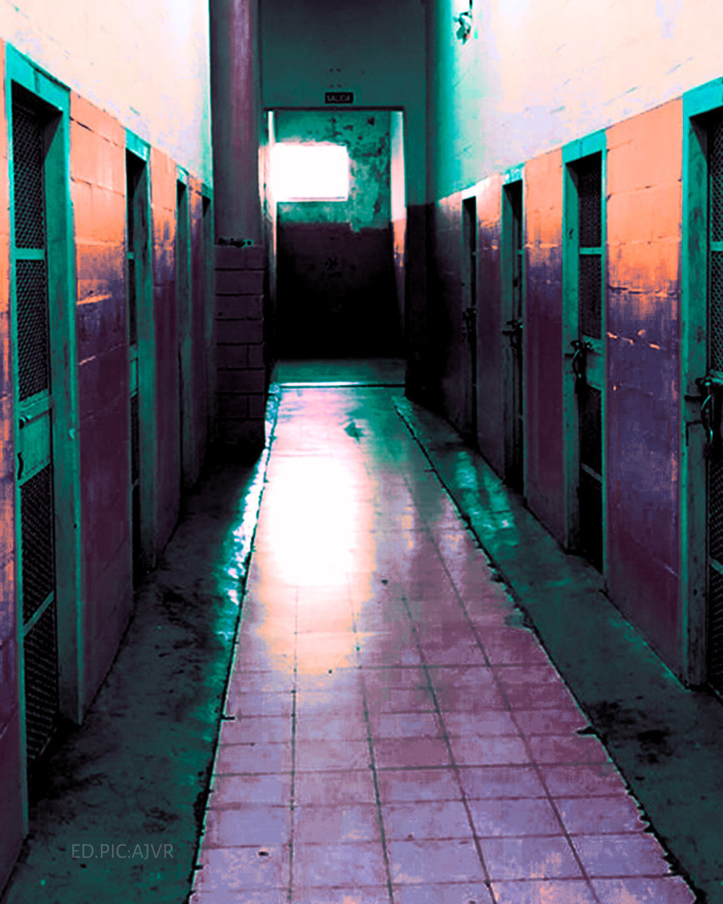
ARTÍCULO
Nuevo régimen penal juvenil: la mentira, la deuda y la trampa
La reciente sanción de la Ley 27.801 establece un nuevo Régimen Penal Juvenil. Su aprobación podría
considerarse un paso necesario si se tiene en cuenta que hasta ahora seguía vigente una normativa dictada
durante la última dictadura militar, cuestionada desde hace décadas por la discrecionalidad que habilitaba
y por sus limitaciones para garantizar los derechos de niños, niñas y adolescentes. La sanción de esta ley
no puede atribuirse únicamente a la iniciativa de un gobierno de ultraderecha. Es la expresión de un
consenso punitivo que atraviesa buena parte del sistema político y de la sociedad.
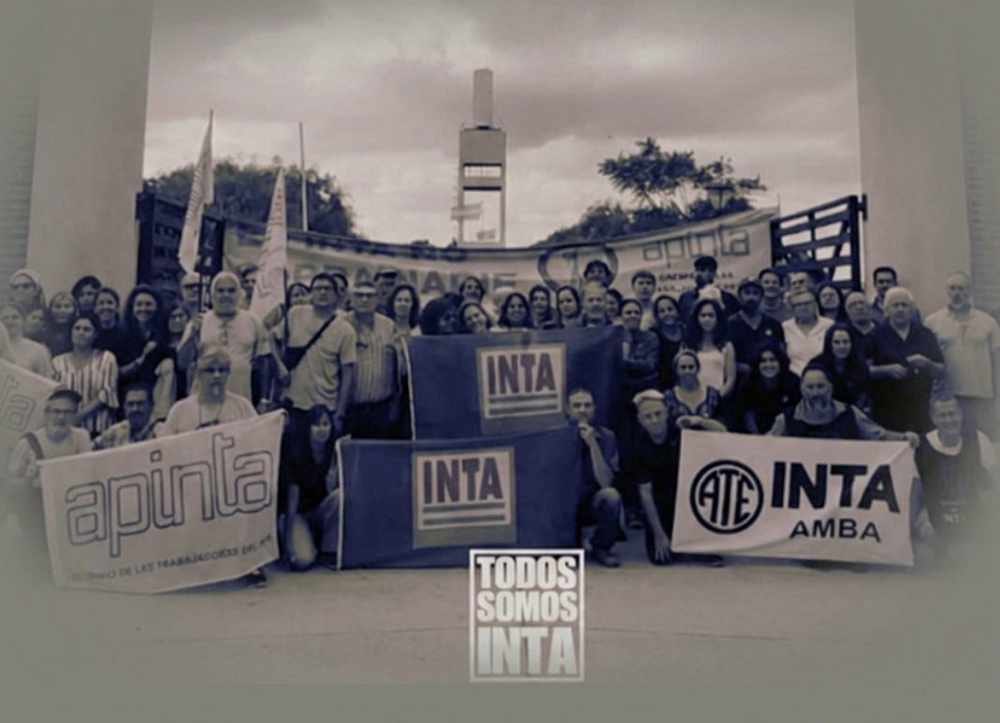
NOTA
Crónica de un desguace anunciado
El Instituto Nacional de Tecnología Agropecuaria (INTA), pilar histórico de nuestro desarrollo científico
agrícola y del acompañamiento a la familia agraria, enfrenta hoy el ataque más virulento de su historia en
democracia. No estamos ante una simple crisis administrativa ni ante un intento de optimizar los recursos
del Estado, sino frente a un plan de exterminio premeditado y ejecutado desde la cúpula del gobierno
nacional.
ARTÍCULO
Construir un nosotros frente al capital
Cuando varios trabajadores funcionan juntos hacia un objetivo común en el mismo proceso de producción o en
procesos distintos, pero conexos, su trabajo adopta la forma cooperativa. No se trata únicamente de
aumentar las fuerzas productivas individuales, sino de crear por medio de la cooperación, una nueva
fuerza, que funcione como fuerza colectiva. Los desafíos de la identidad cooperativa en la realidad.
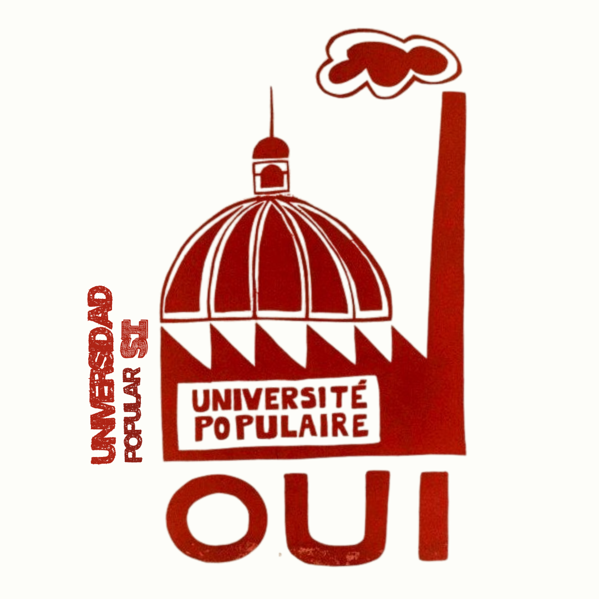
EDITORIAL
Manifiesto Universidades Mayo Francés de 1968
Las A.G. de los diversos establecimientos públicos de enseñanza superior que escribieron el manifiesto
universitario del Mayo Francés. El mayo francés se configuró, no sólo como un mero estallido
juvenil espontáneo, sino el detonante de una discusión estructural sobre la función social de la
universidad. Las preguntas que hace 50 años atravesaron las aulas de Nanterre y luego las
calles de París, y hoy resuenan con una actualidad inquietante.
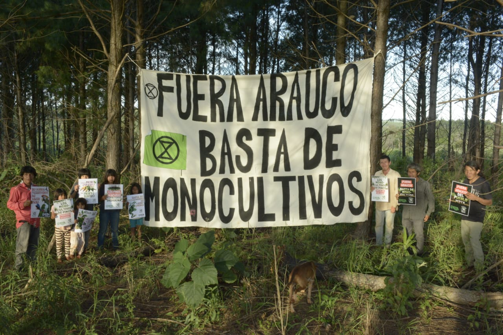
ENTREVISTA
Arauco avanza, la selva resiste: entrevista
Desde la Gaceta Clara Zetkin dialogamos con Clarisa Neztor, activista socioambiental e
integrante de Extinction Rebellion Misiones, y Santiago Ramos, mboruvixa (cacique) de la comunidad
Mbya Guaraní de Puente Quemado II, en Garuhapé, Misiones. Denuncian el hostigamiento policial,
las detenciones arbitrarias y el avance de la transnacional chilena Arauco, cuyos monocultivos de pino ya
asfixian el 80% de su territorio ancestral. Una conversación sobre ecocidio, criminalización de
la resistencia, el rol de la ciencia comprometida y las estrategias concretas de lucha.

ARTÍCULO
Asambleas de Chapadmalal: la política autónoma frente al avance inmobiliario-turístico
A partir del artículo de Mariangel Cacciutto: ¿pueden las asambleas vecinales sostener el antagonismo sin
caer en el localismo? La experiencia de "Luna Roja" y "Bienes Comunes de Chapadmalal" muestra las
potencialidades y tensiones de la contrademocracia en la defensa del territorio.
La productividad política que emerge del conflicto por la expansión inmobiliaria y turística en la
zona se relaciona con la capacidad que han tenido las asambleas de Chapadmalal de ir construyendo y
consolidando un sujeto político que encarna el antagonismo, al cuestionar el orden establecido
y reproducido de gestión estatal-privada de los espacios públicos para su uso turístico-recreativo en esta
zona costera del partido de General Pueyrredón.
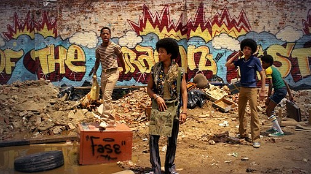
RESEÑA
BAILAR ENTRE LAS RUINAS: Una reseña de The Get Down (2016)
Entre edificios incendiados, saqueos y block parties improvisadas, la serie propone una idea profundamente
política y emocional: entre las ruinas pueden surgir formas colectivas de resistencia, deseo y
esperanza. La belleza que aparece en The Get Down no está separada de esas fracturas
materiales, sino que nace desde sus márgenes y contradicciones. El arte, la música y la fiesta no
resuelven las condiciones que producen la devastación del Bronx, pero sí permiten, allí donde el sistema
sólo parece producir exclusión y destrucción, disputar el aislamiento, reapropiarse del espacio urbano y
construir experiencias compartidas capaces de reorganizar, aunque sea momentáneamente, la vida
colectiva alrededor de algo distinto a la violencia y la ruina.
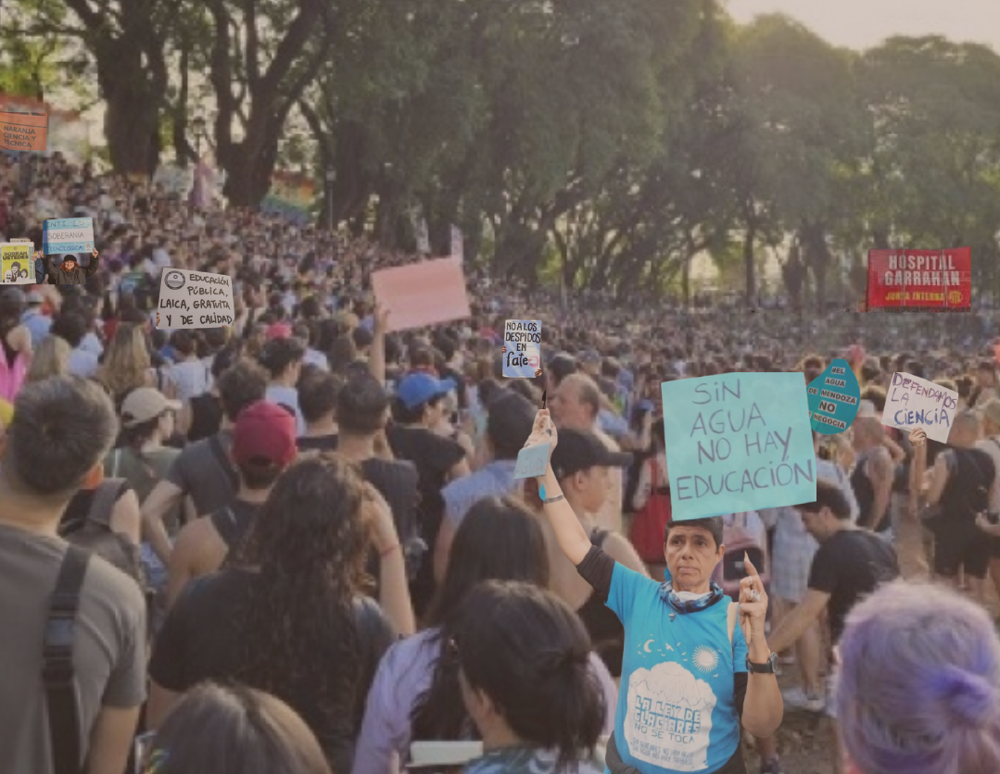
ARTÍCULO
¿La exacerbación de la fragmentación sectorial y territorial como estrategia política?
La construcción política global y la de nuestro país requiere ser revisada a fin de caminar hacia una
verdadera transformación de nuestras condiciones de vida. O, dicho de otro modo, si seguimos así, son
pocas las opciones que tendremos de vivir dignamente en este momento crítico del país y del mundo.
Guillermo Folguera, militante socioambiental con más de dos décadas de trayectoria,
analiza los límites de la fragmentación como táctica política dominante. Frente a la
impotencia que produce la separación entre derechos humanos, laborales, ambientales y territoriales,
propone construir puentes sin eliminar las identidades: una política de vida que integre desde los
territorios.
RESEÑA
Las pasiones sindicales según Raymundo Gleyzer
“Basta hacer un recorrido por los barrios populares para observar la eficacia de un instrumento así.
¿Cuántas mujeres vemos en sus casas leyendo fotonovelas?, ¿y cuántos obreros las leen camino al trabajo?”
Sobre esta premisa, abiertamente debatida dentro de una zona del cine militante, posicionado en la
izquierda revolucionaria, el director Raymundo Gleyzer de quien se cumplieron cincuenta años en estos días
de su desaparición forzada, concibió en 1972 “Los traidores”. Militante de PRT, un partido que proliferó a
partir del golpe militar de 1966 y abruptamente menguó con los ensayos de terrorismo estatal para 1974, y
del activismo audiovisual; creó su único largometraje de ficción, dentro de una filmografía en la que
privilegió el testimonio directo mediante el empleo de los procedimientos documentales.
ARTÍCULO
Fundamentos Filosóficos Contra El Constructivismo Social
La filosofía va para adelante de forma positiva a pesar de los obstáculos que representa la búsqueda de la
sabiduría. El sofista abandonó esa búsqueda porque le pareció innecesaria y una tarea titánica que no está
dentro de las posibilidades humanas; nuestra sabiduría tiene límites, los límites de la razón. Como lo
hicieron los sofistas, en la actualidad se instrumentaliza el conocimiento: el fin justifica los medios.
La segunda década del siglo XXI vuelve a tomar fuerza en el mundo académico y social. Trayendo
como consecuencias la negación y anulación del conocimiento, con una finalidad únicamente política de
imponer la doxa por sobre la episteme .
DISCURSO
¡Por la liberación de la mujer!
Clara Zetkin expone ante el Congreso Obrero de París las bases de la emancipación femenina: el trabajo de
la mujer no es el problema, sino la explotación capitalista que lo degrada. La independencia económica es
la condición indispensable para que las mujeres sean seres humanos libres. No hay "cuestión especial de la
mujer" separada de la cuestión social: la liberación será obra de la lucha del trabajo contra el capital.

NOTA
PRECARIEDAD PROGRAMADA: CÓMO LA REFORMA LABORAL AFECTA AL SECTOR DE INFORMÁTICA
El mundo de sistemas, alguna vez mimado como el futuro del trabajo, enfrenta ahora los embates de una
reforma que precariza derechos. Derribamos mitos y analizamos el impacto real en programadores, analistas
e ingenieros de software.

NOTA ACTUALIDAD
LA INSTITUCIONALIDAD DEL FÚTBOL Y LOS TORNEOS COMERCIALES: DOS CARAS BURGUESAS DE UN MISMO NEGOCIO
¿Por qué las ligas oficiales se deterioran mientras crecen los torneos comerciales? Este artículo
demuestra que ambos fenómenos responden a una misma lógica de la burguesía futbolística. A partir del caso
argentino, Fusetti analiza la coproducción de la crisis, el rol autocrático de la AFA y plantea posibles
reversiones obreras desde los clubes y el Estado para construir un fútbol digno al servicio de sus
trabajadores y no del capital.
NOTA
¿Con la IVE cómo andamos?
Desde la asunción de Javier Milei, el Ministerio de Salud dejó de producir información sobre el acceso a
la interrupción voluntaria del embarazo. A pesar del desfinanciamiento, la ley sigue vigente y los equipos
de salud la sostienen.

NOTA
El código de guerra: la responsabilidad de las tecnológicas en el horror global y el silencio en las aulas
Amazon, Google y Palantir son engranajes de la maquinaria de guerra y genocidio. El diseño de software es
un acto político, pero ¿Quién decide qué tecnología financiamos y con qué criterios? ¿Cómo nos preparamos
para tomar esas decisiones?
ARTÍCULO
Defender los glaciares en Argentina: cuestión de "vida" o "muerte"
Argentina tiene más de 16.000 glaciares, reservas estratégicas de agua dulce. La modificación de la Ley de
Glaciares pone en riesgo la vida en territorios áridos y la justicia ambiental. Casi 1 millón de firmas
acompañan un amparo judicial para frenarlo.

ENTREVISTA
El Hospital Garrahan desde adentro: resistencia, ciencia y ajuste
Desde la Gaceta Clara Zetkin entrevistamos a Alejandro Lipcovich, secretario de la Junta Interna de ATE.
El hospital emblema de la salud pública pediátrica Argentina atraviesa un conflicto marcado por el ajuste
presupuestario, el deterioro salarial y las políticas de vaciamiento. Hablamos sobre la lucha del 2025, el
triunfo del aumento del 61%, la contraofensiva del gobierno con sumarios y despidos, y el rol del Garrahan
como espacio de producción científica.
ARTÍCULO
La ideología de género: la hidra del gobierno libertario
El discurso de Javier Milei en Davos 2025 construye la "ideología de género" como un monstruo de múltiples
cabezas: una amenaza latente, un virus mental, un cáncer a extirpar. A través de operaciones retóricas de
condensación, patologización y criminalización, el presidente configura a feminismos y diversidades como
un enemigo interno, legitimando respuestas violentas. Los crímenes de odio aumentaron un 62% entre 2024 y
2025. Contra la ofensiva patriarcal, organización feminista.
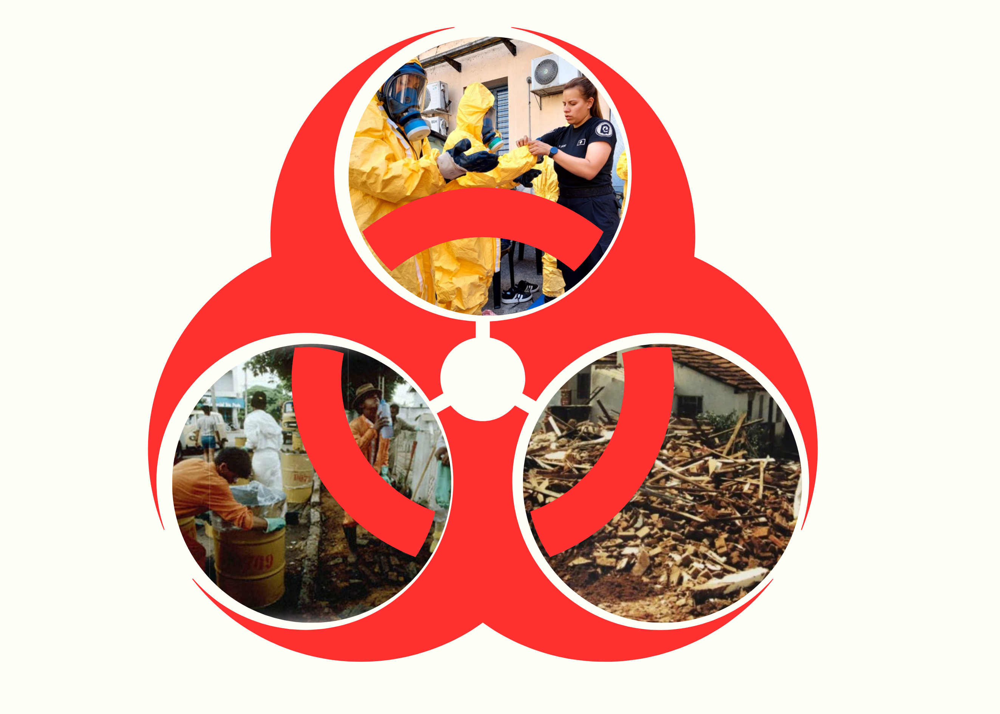
RESEÑA
"Emergencia radiactiva": el desastre no empieza con el cesio, sino con la desigualdad
La serie de Netflix reconstruye el accidente de Goiânia (1987) y muestra que el desastre no comenzó con la
radiación, sino con el abandono, la especulación y la desigualdad en el acceso al conocimiento. Ciencia
pública, participación y territorios periféricos en debate.